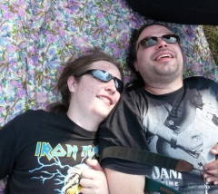
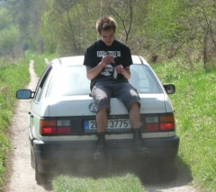
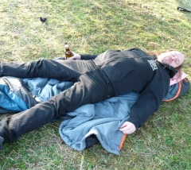

LMB party is a traditional outdoors whole-weekend
lasting megaparty hapenning annually by the end of
april, placed outside civilisation within Karlstejn and
Beroun's surrounding areas.

We serve draft beer at the place for a reasonable coin,
some grilled food is sold at the place also. The
atmosphere of the event is backed up by loud reproduced
music, typically of Rock & Metal genres.
The place is reachable either by public transportation (train, bus), or by a car. There is enough parking space at the area of the event. The exact address of the place is Tetín 70 (There is two types of house numbering  there so there are also two seventies, look for the one outside the village!). Nearest villages & towns reachable by public transportation are Tetín (1 km, bus from Beroun), Srbsko (2km, train from Prague & Beroun), Beroun (3 km, bus & train from Prague). In the case of arrival of a larger group, we can arrange a car to help you with your baggage.
Due to every year's increasing amount of attendees and limited capacity of the object itself I am unfortunately not able to provide an accomodation to all guests of the party. Most of the beds inside are usually reserved  for the LMB crew as a privilege and thanks for their help. The rest of the places are usually taken pretty fast, but you can take your chances. Most of the people usually spend the night either in a tent or in their cars. And some - of course - sleep wherever they fall down.